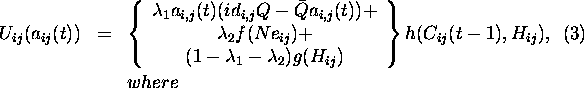
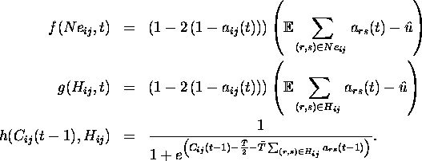

Several programs were designed in Mathematica to implement the model described above. The exact utility function employed for generating the decision functions is described below:


With this specification in mind we are ready to present our main findings.